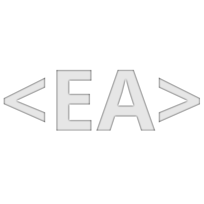

VerifyLab
A toolkit for AI agents: formal proofs, reproducible checks, and reviews of what the evidence establishes.

AI Engineer
Turin, Italy
I work on EdTech and AI at Braynr, study deep learning, and build open-source projects at Castor.
I build AI applications and the backend systems behind them. Alongside my product work, I explore language models through implementation and experiments.
Architecture, backend development, AI integration, and frontend development with the team.
Previously developed serverless LLM applications with Python and AWS Lambda, from product ideas to implementation.
Other experience: teaching a course on LLMs for business at SOCO, and freelance web development.
Python · PyTorch · AWS
A toolkit for AI agents: formal proofs, reproducible checks, and reviews of what the evidence establishes.
Extracting entities and relations from Italian radiology reports. A collaborative project with Daniel Rabottini and Rocco Angelella.
An earlier Gradio chat interface for DeepSeek-R1.
A 10-module introduction to large language models, in Italian. Last content update: .